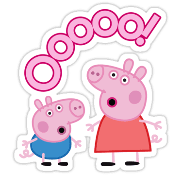

404
Oh nein! Eine Matschepfütze!
Diese Seite hat sich im Schlamm versteckt oder existiert nicht mehr. Keine Sorge, Papa Wutz repariert das bestimmt bald!
Zurück zur StartseiteDiese Seite hat sich im Schlamm versteckt oder existiert nicht mehr. Keine Sorge, Papa Wutz repariert das bestimmt bald!
Zurück zur Startseite